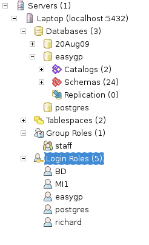

Setup Wizard
If the database has been successfully built, a default user called 'easygp' will have been created.
If you inspect the database using pgAdmin, it should look something similar to this:

The user 'easygp' has the permissions necessary to allow you to access the EasyGP database, to add your general practice
as a new organisation and to create a system administrator.
Note the user 'easygp' is not and will never be a 'staff member' and as such cannot run the clinical sections of the program.
After the database wizard has been run, you should logon as 'easygp' or the sysadmin you created, and enter any further
staff members or
organisations that you wish.